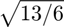

Short Preamble
Function to create the short preamble for the PLCP sub-layer PPDU.
Contents
Syntax
ShortP = Create_Short_Preamble()
Descripción
The Create_Short_Preamble() function creates the short preamble, based on the specifications distributed by the IEEE 802.11-2012 standard. First it is necessary to create a short sequence and then proceed to concatenate several of these and obtain the preamble. The values of the carriers are assigned according to what is indicated in the standard.

Input Arguments
none
Output arguments
- ShortP
Short preamble for the PLCP sub-layer PPDU.
Examples
The function Create_Short_Preamble() is called.
function ShortP = Create_Short_Preamble()
Assigning values to carriers
An array of 53 elements is generated (52 subcarriers + DC) and the corresponding values are assigned.
Sho_preamble = zeros(1,53);
Sho_preamble(1,3) = 1+1i;
Sho_preamble(1,7) = -1-1i;
Sho_preamble(1,11) = 1+1i;
Sho_preamble(1,15) = -1-1i;
Sho_preamble(1,19) = -1-1i;
Sho_preamble(1,23) = 1+1i;
Sho_preamble(1,31) = -1-1i;
Sho_preamble(1,35) = -1-1i;
Sho_preamble(1,39) = 1+1i;
Sho_preamble(1,43) = 1+1i;
Sho_preamble(1,47) = 1+1i;
Sho_preamble(1,51) = 1+1i;
Discretization process:
The IFFT of the array is performed and generates the short sequence.
The array is multiplied by

Sho_preamble = sqrt(13/6) * Sho_preamble;
The indexes of the vector are ordered according to the standard.
preambleSArr = zeros(1,64);
preambleSArr(1) = 0;
preambleSArr(2:27) = Sho_preamble(28:53);
preambleSArr(28:38) = 0;
preambleSArr(39:64) = Sho_preamble(1:26);
The symbols are passed in time through the Discrete Transform Reverse Fourie.
preambleShifft=ifft(preambleSArr);
Only 1/4 of the signal is extracted because it is periodic.
preambleShCut=preambleShifft(1:length(preambleShifft)/4);
Short preamble concatenation
The short preamble has the duration of 2 symbols and 2 Guard Intervals (2 * 1.25).
ShortP = zeros(1, 64 * 2 * 1.25);
The short preamble is created by concatenating 10 short sequences.
for i=1:10 ShortP(1,[(i-1)*(64 / 4) + 1: i*(64 / 4) ] ) = preambleShCut; end
end
See also